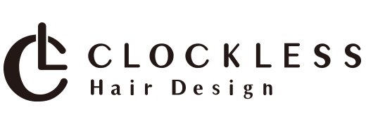
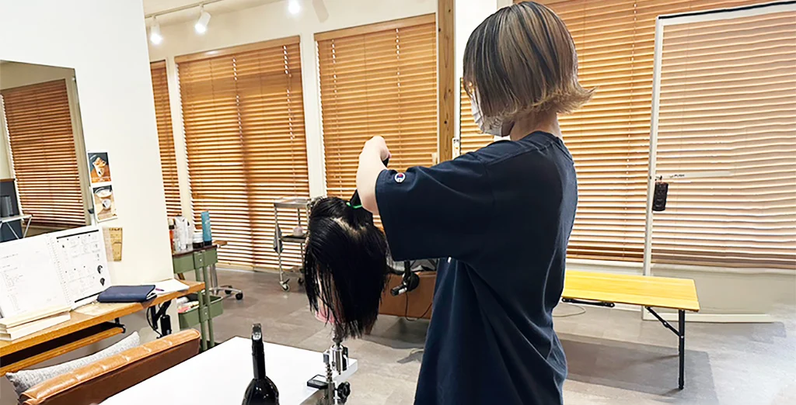

ASSISTANT
基礎から、実践へ。
シェープ、シザーワーク、ベーシックと3つのスタイルを習得。その後は6つのサロンスタイルとモデルカットに取り組み、質感・毛量・フォルム・似合わせを学びます。規定の試験とモデル数をクリアし、最終試験に進みます。

EDUCATION AT CLOCKLESS
基礎を大切にしながら、早くからカットを学ぶ。
技術も、人としての魅力も育てていく。

WHY WE START WITH CUT
シャンプー・ワインディングの試験をクリアしたら、カットの練習へ。早い段階でその面白さに触れ、学ぶ意欲と基礎力を育てます。
カラーやパーマの技術、毛髪や薬剤の知識、接客も並行して学びます。目指すのは、お客様の想いに応えられる美容師です。
YOUR CAREER, STEP BY STEP
ASSISTANT
シェープ、シザーワーク、ベーシックと3つのスタイルを習得。その後は6つのサロンスタイルとモデルカットに取り組み、質感・毛量・フォルム・似合わせを学びます。規定の試験とモデル数をクリアし、最終試験に進みます。
STYLIST
担当するお客様との信頼を育みながら、ベリーショートや幅広い年代に対応するスタイルを習得。スタイルごとの試験を通じて、表現力と提案力を磨きます。
TOP STYLIST
カウンセリングやコミュニケーションにも磨きをかけながら、アシスタントの教育へ。サロン全体を支えるチームワークとリーダーシップを身につけます。
NEXT STAGE
店長としての運営や、独立という選択へ。技術だけでなく経営にも視野を広げ、自分が目指す働き方を考えていきます。結婚・出産後の復帰や家庭との両立も相談できます。
LEARNING
目標と練習内容を明確にし、段階的に技術を身につけます。
REWARD
技術試験による成長を、評価へつなげていきます。
OPPORTUNITY
スタイリストとして活躍するための集客とサロンづくりに取り組みます。